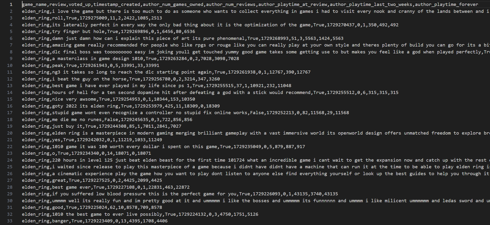

Data Exploration
Data Collection
Our data source was steam reviews which were collected using Steam’s GetAppReviews API. Using the API we fetched 1500 reviews per game, in batches of 100 reviews per API call, for a total of around 45000 reviews to work with. We selected a diverse set of 30 games, both with and without adjustable difficulty settings, from a variety of genres like RPG, shooters, puzzle, simulation, etc. The full list of games is below:
- Elden Ring (RPG/Action)
- Sekiro: Shaodws Die Twice (Action/Adventure)
- Dark Souls Remastered (RPG/Action)
- Armored Core VI: Fires of Rubicon (Mech Combat/Action)
- Hollow Knight (Metroidvania/Platformer)
- Hades (Roguelike/Action)
- Dead Cells (Roguelike/Metroidvania)
- Slay the Spire (Roguelike/Deckbuilding)
- Returnal (Third-Person Shooter/Roguelite)
- Risk of Rain 2 (Action/Roguelike)
- The Witcher 3 (Open World/RPG)
- Mass Effect Legendary Edition (Third-Person Shooter/RPG)
- Divinity: Original Sin 2 (Tactical RPG)
- Baldur's Gate 3 (Turnbased/RPG)
- Pillars of Eternity (Isometric RPG)
- Portal 2 (Puzzle/Platformer)
- The Witness (Puzzle/Exploration)
- Celeste (Platformer/Adventure)
- Ori and the Blind Forest (Platformer/Metroidvania)
- INSIDE (Puzzle/Adventure)
- Stardew Valley (Farming/Life Simulation)
- Factorio (Automation/Management)
- Frostpunk (Survial/City Building)
- The Forest (Survival/Adventure)
- Subnautica (Exploration/Survival)
- Call of Duty: Modern Warfare (Tactical FPS)
- Rocket League (Sports/Competitive)
- Counter-Strike 2 (FPS/Competitive)
- Team Fortress 2 (Multiplayer FPS)
- Dota 2 (MOBA/Competitive)
The API returns the reviews in JSON Format. The raw review data for each game looks something like this:
Data Preprocessing
Reviews from each game were stored in JSON Files. First, we compiled all JSON files into one single pandas dataframe for data preprocessing. Any duplicate or non english records were removed. A field called “author” was a dictionary, which was flattened by appending each of its keys as a separate column in the dataframe. Records without “playtime_at_review” fields were dropped. For our analysis we would only need the columns: "game_name","review","voted_up","timestamp_created","author_num_games_owned","author_num_reviews","author_playtime_at_review","author_playtime_last_two_weeks" and "author_playtime_forever". Only these relevant columns were kept with others getting discarded. The "review" column was cleaned with all text being converted to lowercase for uniformity, punctuation and non alphanumeric characters were removed using regular expressions. We also filter out reviews with lack of meaningful content. We do this by first checking if the review has "valid words". "Valid words" are defined to be meaningful english words. But some terms which are commonly used in gaming scenarios like "gg", "goty", "despawn", etc. are also added to our set of valid words. However, we cannot manually add all words relevant to the games and there could still be words which are specific to some games and their communities like the word "elden" used in the game Elden Ring. So, we add another check in our validation such that if a word, which isn't already marked valid by our inital check, appears more than 3 times across other reviews is marked as a valid words. With these checks, the reviews are marked as relevant only if atleast 50% of the words are found to be valid. All records with empty or irrelevant reviews after the transformations were dropped with the dataset now having close to 43000 records. The cleaned dataset is stored in a csv which looks like this:
Visualizations
Visualization 1: [Title]
[Brief explanation and insights]